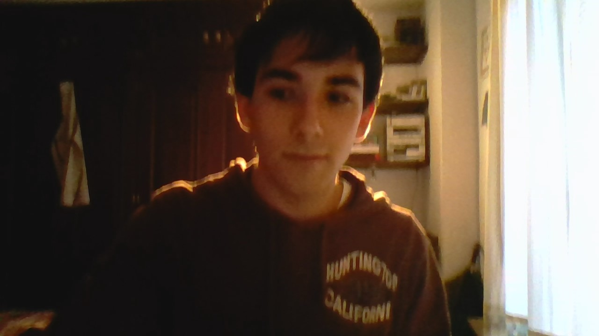

Web personal

Produced by: Jose Enrique Vazquez Cantero
Algo de mi
Me llamo Quique, vivo en mairena del aljarafe pero estudio en sevilla en un centro que hay en Triana.
donde estudio un ciclo formativo superior de informática. Este ejercicio ha sido creado para una asignatura llamada Lenguaje de Marcas
Titulación
- Primaria
- ESO
- Bachillerato de ciencias
- Bachillerato de arte
- Bachillerato de salud
- Grado elemental en piano
- Grado elemental de danza clasica
- Grado medio de danza clasica
Mis gustos
- El deporte
- La informática
- El cine
- Lectura
- Airsoft y deportes de riesgo
- Viajar y visitar lugares nuevos
- La aventura y el ciclismo en especial
- Senderismo, escalada, turismo rural
- La natación
Bueno y con esto y un biscocho :D